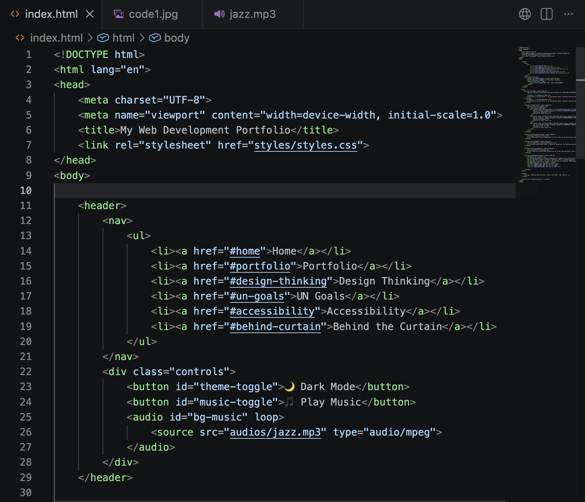
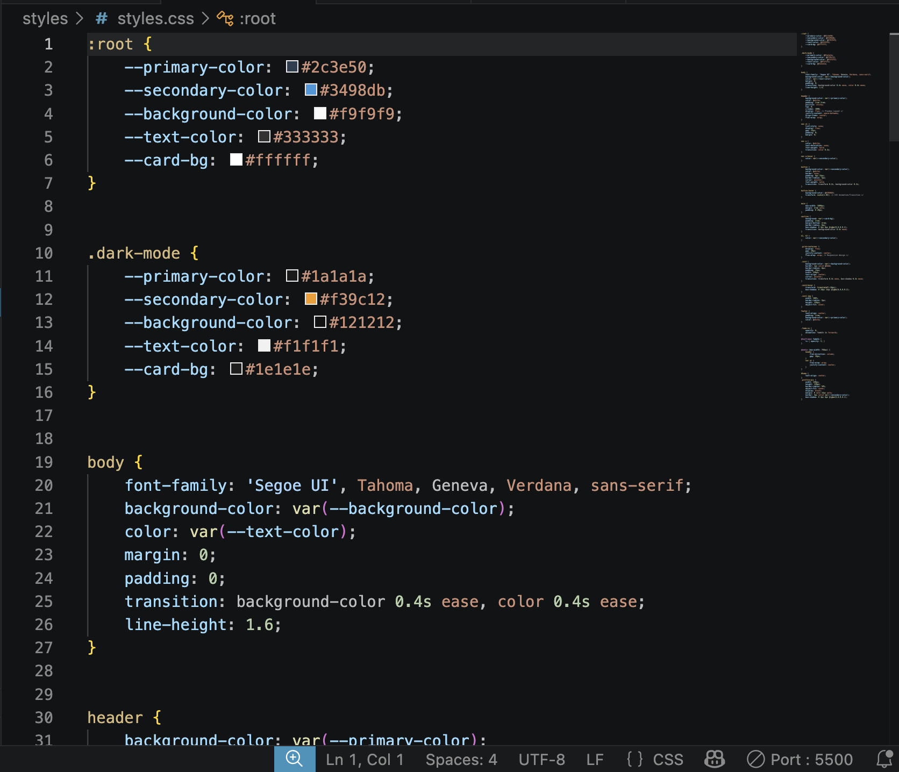
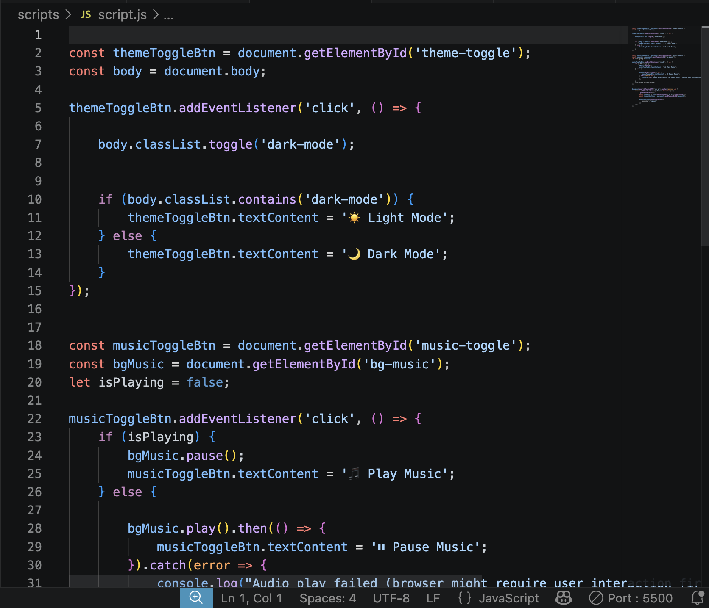

Hello, I'm Sebastian Shen
Welcome to my portfolio! I am passionate about creating interactive, accessible, and user-friendly websites.
Hello, I'm a Web Developer
Welcome to my portfolio! I am passionate about creating interactive, accessible, and user-friendly websites.
My Projects & Hobbies

Playing Basketball
Click to learn more!

Web Development
Click to learn more!

Coding with C++
Click to learn more!
Design Thinking Process
To build this site, I empathized with my users by prioritizing readability. I defined the structure using wireframes, ideated a three-color scheme, prototyped the layout in CodeSandbox, and tested the interactive JavaScript features to ensure they worked smoothly.
UN Global Goal: Quality Education
I am passionate about Goal 4: Quality Education. By learning web development, I can build educational tools and share knowledge globally, ensuring inclusive and equitable learning opportunities for everyone.
Accessibility Statement
This website follows WCAG guidelines by using high-contrast colors, descriptive alt text for all images, and semantic HTML to ensure screen readers can easily parse the content.
Behind the Curtain
Challenges: Managing the layout across different screen sizes was challenging, but Flexbox made it much easier.
Developer Tools: I heavily used the Chrome Inspector (and CodeSandbox Console) to debug my JavaScript logic.
What I learned: I learned how to integrate DOM manipulation with CSS transitions to create a smooth user experience.
Screenshots of My Codes:


